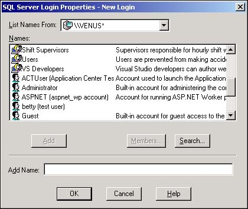

Any user who is accessing SQL Server from a Windows NT or Windows 2000 computer (but not Windows 98 or ME) can be given a SQL Server Windows NT/2000 login. Although setting up the NT/2000 login is almost the same process as creating a standard login, you have the option of adding the user as any of the following:
An individual user
A member of an NT/2000 group
A member of the SQL Server built-in group
I want to take advantage of the fact that the users on my system have all been assigned to functional groups (such as marketing and sales) in Windows NT or Windows 2000. Because these groups parallel the user's SQL Server activity, I'd like to use each person's network identity as his SQL Server login.
Using a person's Windows NT/2000 group saves a lot of administrative time. Rather than creating a custom login for each user, I can assign a login to a Windows NT/2000 group, and SQL Server can recognize any individual as valid who belongs to the group.
You first create a Windows 2000 user or group, and then create a SQL Server login for that user or group. Earlier in this chapter, you read how to add users and groups to Windows NT/2000. You'll now use the Windows Enterprise Manager dialog boxes to establish SQL Server logins for those users and groups.
If the user is working with Windows NT or 2000, you are able to establish a Windows NT/2000 login identity for him. As you'll see, using a Windows NT/2000 login is less work than using standard logins.
When a user logs in to a SQL Server or Windows NT/2000 account, his identity is verified against the account information that Windows manages. SQL Server security is tightly integrated with Windows login information, and SQL Server knows and understands the user's identity.
SQL Server recognizes the user's personal identity as well as his Windows group membership. Even if no personal SQL Server login is established for the user, as long as a SQL Server login is established for at least one of the Windows groups to which he belongs, he will be able to access SQL Server.
The person's identity and Windows group membership is established as he logs in to Windows. As you'll see later in this chapter, these identities play important roles with regard to object permissions and access to data that SQL Server manages.
Open Enterprise Manager and select the Security icon. Open this icon by clicking on the plus sign (+) next to it.
Select New Login from the Actions menu, or click on Logins with the right mouse button and select New Login from the context menu. Regardless of which method you use, the SQL Server Login Properties dialog box (see Figure 11.10) opens.
Use the button next to the Name text box to display the list of Windows NT/2000 user and group logins that SQL Server recognizes. The list is alphabetically sorted first by groups, and then by users. In Figure 11.11, you see the list scrolled downward to show the last several groups and the first users in the list.

Select a group or user for the new login. If the user or group does not appear in the list, use the drop-down list at the top of the dialog box shown in Figure 11.11 to select another computer on the network.
Establishing a Windows NT/2000 login account is similar to creating a standard SQL Server login. The biggest difference is that SQL Server recognizes the user's Windows identity,including the password and group membership.
The user's identity is how SQL Server determines the individual's access to database data and objects. You'll learn about these important permissions in the sections titled A and B later in this chapter.
Don't automatically create logins for every Windows NT/2000 group. This would mean that virtually every user has access to SQL Server. You should provide access to SQL Server only to those users with a legitimate need to use the data that is stored in SQL Server, or to people who are established as SQL Server system administrators.